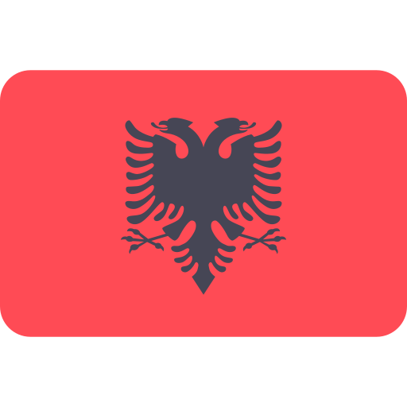

Arsenal FC
Arsenal Football Club je anglický futbalový veľkoklub z Londýna. Klub vyhral 13 titulov v Premier League a 14 titulov v FA Cupe. S celkovým počtom 47 trofejí je Arsenal tretím najúspešnejším anglickým futbalovým klubom. Arsenal bol založený v roku 1886 v londýnskej časti Woolwich. V roku 1893 sa stal prvým klubom z juhu Anglicka ktorý sa pripojil k druhej najvyššej súťaži. V roku 1913, sa presťahoval severne do štvrte Highbury. V 30-tych rokoch minulého storočia Arsenal vyhral päť ligových titulov a dva Poháre FA. Po období 2. svetovej vojny Arsenal vyhral ligový titul a opäť dva Poháre FA. V sezóne 1970 – 1971, v 90-tych rokoch a v prvej dekáde 21. storočia, Arsenal vyhral dva ďalšie ligové tituly. Dokonca v roku 2006 sa stal finalistom Ligy majstrov, kde však podľahol Barcelone 2:1. Vzhľadom na blízku vzdialenosť je najväčším rivalom Arsenalu Tottenham Hotspur. Derby medzi Arsenalom Tottenhamom sa nazýva the North London derby.
Súpiska pre sezónu 2024/2025
Brankári
#54 Nygaard Martin Lucas 
#32 Neto 
#92 Porter Jack
#22 Raya David 
#62 Rojas Alexei 
#36 Setford Tommy
Obrancovia
#33 Calafiori Riccardo 
#6 Gabriel
#47 Kaccuri Maldini 
#15 Kiwior Jakub 
#51 Nichols Josh
#2 Saliba William 
#12 Timber Jurrien 
#18 Tomiyasu Takehiro 
#4 White Ben
#17 Zinchenko Olexandr 
Stredopoliari
#37 Butler-Oyedeji Nathan
#44 Gowen Jimi
#29 Havertz Kai 
#3 Heaven Ayden
#20 Jorginho
#49 Lewis-Skelly Myles
#23 Merino Mikel
#53 Nwaneri Ethan
#8 Odegaard Martin (C)
#56 Oulad M'Hand Salah 
#5 Partey Thomas
#41 Rice Declan
#61 Robinson Josh
#63 Rosiak Michal
Útočníci
#9 Jesus Gabriel
#46 Kabia Ismeal
#11 Martinelli Gabriel
#7 Saka Bukayo
#30 Sterling Raheem
#19 Trossard Leandro 
Tréner
Arteta Mikel